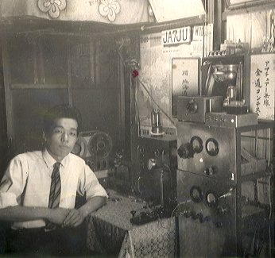

1960年の6m入感状況
[DX Report Jan-Dec.1960]
TIME:JST(UTC+0900)
Report from JA7JU (QN00)
◎新2級(2アマ)に28MC帯が開放され極端にアクティビティの落ち込んだ1960年。サイクル19も下降線を下り、
後半にはサンスポット値(SSN)の平均も100を切り、50MCでは珍しいリポートは無い。

01-31.Jan.1960
◎50MCでは国内外のDXとのQSOは無し。相変わらず28MC帯のコンデションはFB。
01-29.Feb.1960
◎50MCでは国内外のDXとのQSOは無し。
01-31.Mar.1960
◎50MCでは国内外のDXとのQSOは無し。
01-30.Apr.1960
◎50MCでは国内外のDXとのQSOは無し。
01-31.May.1960
◎50MCでは国内外のDXとのQSOは無し。
01-30.Jun.1960
◎50MCでは国内外のDXとのQSOは無し。
01-31.Jul.1960
◎50MCでは国内外のDXとのQSOは無し。
01-31.Aug.1960
◎50MCでは国内外のDXとのQSOは無し。
01-31.Sep.1960
◎50MCでは国内外のDXとのQSOは無し。
01-07.Oct.1960
◎50MCでは国内外のDXとのQSOは無し。
08.Oct.1960
◎日中にVKがFBにオープン。
◎聞こえていた局：VK4ZAA.VK4ZBT.VK2ZLP.VK4ZBZ.VK4VR.VK5GG.VK5ZDZ.VK5MK.VK4ZDS.VK5BQ(YL)。
VK4ZBF 11:13 50.- AM QSO
VK3AZY 11:40 50.- AM QSO
VK3ALZ 11:50 50.- AM QSO
VK4ZAT 12:00 50.- AM QSO (6m QSO#421)
VK4ER 12:10 50.- AM QSO (6m QSO#422)
VK3ZHF 12:20 50.- AM QSO (6m QSO#423)
VK4ZBI 12:30 50.- AM QSO (6m QSO#424)
VK4ZGL 12:43 50.- AM QSO
VK5ZCR 13:25 50.- AM QSO (6m QSO#425)
VK5ZDR 13:35 50.- AM QSO (6m QSO#426)

《 1960年当時のシャック 》
ラックの上は全北海道コンテスト2年連続1位の優勝CUP。
09-31.Oct.1960
◎50MCでは国内外のDXとのQSOは無し。
01-30.Nov.1960
◎50MCでは国内外のDXとのQSOは無し。
01-31.Dec.1960
◎50MCでは国内外のDXとのQSOは無し。相変わらず28MC帯のコンデションはFB。
◎50MCでの初QSO通算＝426局。28MCでの初QSO通算＝525局(1960/11/27現在)。
|